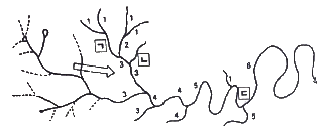
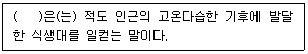
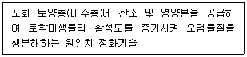
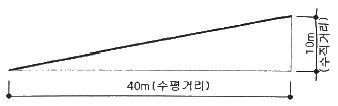
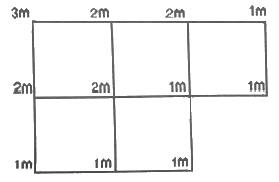
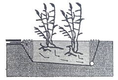
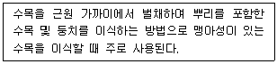
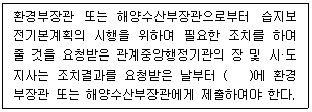

자연생태복원기사 (2022-04-24 기출문제)
1과목: 생태환경조사분석
1. 생태적 피라미드 중 역피라미드 구조의 형태가 생기지 않는 것은?
- 개체수 피라미드
- 생체량 피라미드
- 에너지 피라미드
- 생산력 피라미드
(정답률: 69%)

2. 오덤(Odum)의 표에 따라 개척단계에서 성숙단계로 천이가 진행될 때, 식생의 특성변화에 대한 설명으로 옳지 않은 것은?
- 종의 다양성이 낮아진다.
- 유기물의 양이 많아진다.
- 생물체의 크기가 상대적으로 커진다.
- 생활사(life cycle)가 길고 복잡해진다.
(정답률: 88%)
3. 개체군의 상호작용과 경쟁적 배제의 원리에 관한 설명으로 옳지 않은 것은?
- 가우스(Gause)의 원리라고도 한다.
- 두 개체군 사이에 생태적 지위가 중복될 수 없다는 원리를 말한다.
- 양쪽 개체군에 이익을 주지만 그 관계에는 구속성이 없다는 원리를 말한다.
- 결과적으로 격렬한 경쟁은 생태적 지위가 어느 정도 중복되었을 때 발생한다.
(정답률: 72%)
4. 식생패치의 일반적인 기원 또는 원인이 아닌 것은?
- 간섭패치
- 도입패치
- 서식패치
- 잔여패치
(정답률: 49%)
5. 도시의 생물다양성 보전을 위해 고려해야 할 사항으로 옳지 않은 것은?
- 미래의 생물 서식환경과 종의 생존을 위해 넓은 범위의 대책이 필요하다.
- 종의 분산이나 이동을 유지하기 위해 상호연결된 서식공간의 네트워크가 필요하다.
- 종의 장기적인 생존을 위해 개개의 생물종 보전대책을 최우선적으로 고려해야 한다.
- 서식지 규모의 축소와 단편화를 방지하기 위해 서식환경 전체를 양호하게 유지해야 한다.
(정답률: 93%)
6. 리비히의 최소량의 법칙에 관한 설명으로 옳지 않은 것은?
- 제한요인이란 필요원소 또는 양분 중에서 가장 다량으로 존재하는 요소를 말한다.
- 원소 또는 양분 중에서 가장 소량으로 존재하는 것이 식물의 생육을 지배한다.
- 식물에는 필요원소 또는 양분 각각에 대해 그 생육에 필요한 최소한의 양이 있다.
- 만일 어떤 원소가 최소량 이하이면 다른 원소가 아무리 많아도 생육에 지장이 있다.
(정답률: 79%)
7. 생태적 천이에 나타나는 특성으로 옳지 않은 것은?
- 성숙단계로 갈수록 순군집생산량이 낮다.
- 성숙단계로 갈수록 생물체의 크기가 크다.
- 성숙단계로 갈수록 생활사이클이 길고 복잡하다.
- 성숙단계로 갈수록 생태적 지위의 특수화가 넓다.
(정답률: 62%)
8. 산림성 조류의 길드에 관한 설명으로 옳지 않은 것은?
- 수관층 영소 길드 : 수관층을 둥지로 이용하는 종류
- 수동 영소 길드 : 나무 구멍을 둥지로 이용하는 종류
- 관목층 영소 길드 : 지면, 덩굴수목 등에 둥지를 짓는 종류
- 임연부 영소 길드 : 숲의 내부 공간을 둥지나 자원으로 이용하는 종류
(정답률: 57%)
9. 고립된 섬의 생물종에 관한 설명으로 옳지 않은 것은?
- 섬의 크기가 클수록 생물종의 멸종률은 낮다.
- 섬과 육지의 거리가 멀수록 생물종의 이입률은 낮다.
- 섬의 크기와 육지와의 거리는 섬에 출현하는 생물종 수를 결정한다.
- 섬의 저지대 생물종은 고지대 생물종에 비해 출현종 수가 적다.
(정답률: 93%)
10. 오염물질의 단위에 관한 설명으로 옳은 것은?
- ppm : 십만분의 1에 해당되는 농도, mg·ℓ-1, mg·kg-1, mg·g-1과 동일
- ppb : 십억분의 1에 해당되는 농도, ng·g-1, μg·kg-1, μg·ℓ-1, mg·m-3과 동일
- ppt : 십억분의 1에 해당되는 농도, pg·g-1, ng·kg-1, ng·ℓ-1, μg·m-3과 동일
- ppt : 1조분의 1에 해당되는 농도, ng·g-1, μg·kg-1, μg·ℓ-1, mg·m-3과 동일
(정답률: 44%)
11. 인간의 간섭정도에 따라 생태계를 구분할 때, 종류가 다른 하나는?
- 삼림생태계
- 하천생태계
- 호소생태계
- 경작지생태계
(정답률: 95%)
12. 비오톱의 개념에 관한 설명으로 옳지 않은 것은?
- 비오톱은 보존가치가 높고 보호해야 하는 서식공간에 제한적으로 사용되는 용어이다.
- 비오톱의 어원은 독일어의 biotop으로, 생명을 뜻하는 bio와 장소를 뜻하는 top이 합쳐진 것에서 유래된 것이다.
- 비오톱은 경관생태학적으로 주변 공간과 분명한 경계를 가지고 구분할 수 있으며, 그 구분에 재현성이 있도록 한 토지의 구획이다.
- 비오톱 중 면(面)적인 넓이를 가지며 정도의 차는 있더라도 균일성이 높은 대면적을 가지는 것에는 초원, 삼림, 경작지, 넓은 수면 등이 있다.
(정답률: 63%)
13. 서식처에 관한 설명으로 옳지 않은 것은?
- 서식처의 중요 구성요소에는 먹이, 은신처, 물, 공간 등이 있다.
- James H. Shaw는 은신처를 서식처의 가장 분명한 구성요소로 보았다.
- 서식처 예비판정은 현지에 나가기 전에 실내에서 지형도 등을 이용하여 서식처의 유형을 판정하는 것이다.
- 서식처 조사의 일반적인 과정은 대상지역선정, 서식처 유형 분류, 서식처 유형별 조사, 서식처 유형 도면화의 순서로 이루어진다.
(정답률: 78%)
14. 생태계의 구성요소 중 생물적 요소가 아닌 것은?
- 분해자
- 생산자
- 소비자
- 영양적 지위
(정답률: 97%)
15. 생태 기능의 원리에 관한 설명으로 옳은 것은?
- 에너지는 전이과정에서 유용한 형태로만 변형된다.
- 물질은 순환하지만, 에너지는 한 방향으로 흐른다.
- 야생생물 중 동물종은 한 서식처에서 다른 서식처로 이동하지만, 식물은 이동하지 않는다.
- 물질은 전이과정에서 다른 형태로 변형될 뿐 생성되거나 소멸되지 않지만, 에너지는 전이과정에서 생성과 소멸을 반복한다.
(정답률: 68%)
16. 경관의 구조에 관한 설명으로 옳은 것은?
- 자연적으로 만들어진 주연부는 대부분 곡선이며, 복잡하고 부드럽다.
- 패치가 작고 격리도가 증가할수록 인간의 간섭이 적은 생태계이다.
- 일반적으로 패치 크기가 작을수록 다양한 비오톱을 갖고, 종 다양성이 높아진다.
- 주연부에서의 변화 정도가 클수록 두 생태계 사이를 이동하는 에너지와 물질이 많아진다.
(정답률: 88%)
17. 식물종자에 의한 유전자 이동의 방법 중 동물에 의한 산포방법이 아닌 것은?
- 기계형 산포
- 부착형 산포
- 피식형 산포
- 저식형 산포
(정답률: 95%)
18. 생물다양성 협약의 목적으로 가장 적절하지 않은 것은?
- 유전자원 및 자연서식처 보호를 위한 전략
- 생물다양성 보전과 지속적 이용을 위한 정책
- 생태계 내에서 생물종 다양성의 역할과 보존에 관한 기술 개발
- 생물공학에 의해 변형된 생명체의 안전한 개발을 위한 지속적 지원
(정답률: 90%)
19. 하천의 차수를 나타낸 다음 그림에서 ㄱ, ㄴ, ㄷ으로 표시된 하천의 차수를 순서대로 나열한 것은?

- ㄱ: 1, ㄴ: 1, ㄷ: 6
- ㄱ: 2, ㄴ: 1, ㄷ: 5
- ㄱ: 2, ㄴ: 3, ㄷ: 5
- ㄱ: 2, ㄴ: 3, ㄷ: 6
(정답률: 62%)
20. 다음 ( ) 에 들어갈 용어는?

- 툰드라
- 열대우림
- 온대 낙엽수림
- 북방 침엽수림
(정답률: 94%)
2과목: 생태복원계획
21. 다음에서 설명하는 토양오염 복원 공법은?

- 토양경작법(landfarming)
- 바이오스파징(bio-sparging)
- 식물정화공법(phytiremediation)
- 자연저감법(natural attenuation)
(정답률: 70%)
22. 야생 조류(bird)의 생태적 특징으로 옳지 않은 것은?
- 조류는 대체로 주행성과 야행성으로 나눠진다.
- 조류가 다양하게 서식하면 안정적인 먹이사슬이 형성된다.
- 조류는 행동권이 연중 일정한 종도 있고, 계절에 따라 바뀌는 종도 있다.
- 조류는 인간의 간섭에 민감하지 않으며, 비교적 넓은 서식처를 요구한다.
(정답률: 92%)
23. 환경포텐셜에 대한 설명으로 옳지 않은 것은?
- 복원잠재력을 의미한다.
- 환경의 생태수용력을 의미한다.
- 시간이 지나면서 천이의 진행에 영향을 주기도 한다.
- 특정 장소에서 종의 서식이나 생태계 성립의 잠재적 가능성을 나타내는 개념이다.
(정답률: 61%)
24. 다음 비탈면의 백분율법에 의한 경사도는?

- 10%
- 20%
- 25%
- 40%
(정답률: 84%)
25. 동물의 이동에 대한 예측과 저감대책 수립 시 도움이 되는 경관생태학적 요소는?
- 바탕
- 변화
- 패치
- 통로
(정답률: 83%)
26. 제5차 국가환경종합계획상 국토환경관리의 기본원칙으로 옳은 것은?
- 기후변화 촉진의 원칙
- 그린인프라 감소의 원칙
- 오염배출원 증가의 원칙
- 국토생태축의 보전적 관리 원칙
(정답률: 87%)
27. 하천유역의 면적·지형 등 하천유역의 특성에 따라 수계영향권을 구분할 때, 대권역별 수질 및 수생태계 보전을 위한 기본계획은 몇 년마다 수립되어야 하는가?
- 3년
- 5년
- 10년
- 20년
(정답률: 75%)
28. 환경해설 방식 중 안내자 방식의 장점이 아닌 것은?
- 대상자와 직접 대화 및 토론이 가능
- 일정 프로그램의 도입 및 변경이 용이
- 특별한 해설 인력 및 조직 없이 시행이 용이
- 대상자의 연령, 학력 등 특성별 해설 수준 선택이 용이
(정답률: 89%)
29. 환경영향평가 등의 기본원칙에 대한 설명으로 옳지 않은 것은?
- 계획 또는 사업이 특정 지역에 편중되는 누적영향을 고려하지 않는다.
- 보전과 개발이 조화와 균형을 이루는 지속가능한 발전이 되도록 하여야 한다.
- 결과는 지역주민 및 의사결정권자가 이해할 수 있도록 간결하고 평이하게 작성되어야 한다.
- 대상이 되는 계획 또는 사업에 대하여 충분한 정보 제공 등을 함으로써 환경영향평가 등의 과정에 주민 등이 원활하게 참여할 수 있도록 노력하여야 한다.
(정답률: 88%)
30. 자연환경보전기본계획에 대한 설명으로 옳지 않은 것은?
- 환경부장관이 10년마다 시·도지사와 협의하여 계획을 수립한다.
- 자연환경보전계획은 국가환경종합계획의 자연환경보전분야 상위계획이다.
- 시·도지사는 자연환경보전기본방침에 따른 추진방침 또는 실천계획을 수립하여야 한다.
- 자연환경보전기본원칙 및 자연환경보전기본방침의 달성을 위한 실천계획이다.
(정답률: 75%)
31. 지구온난화의 영향에 관한 설명으로 옳지 않은 것은?
- 해수면의 상승
- 동식물 종의 다양성 증대
- 개발도상국의 농업생산력 저하
- 세계적인 기상이변의 빈도 증가
(정답률: 90%)
32. 생태복원을 위한 공간구획 및 동선 계획 시 고려할 사항으로 옳지 않은 것은?
- 동선은 최대한으로 조성하는 것이 바람직하다.
- 공간구획은 핵심지역, 완충지역, 전이지역으로 구분한다.
- 목표종이 서식해야 하는 지역은 핵심지역으로 설정한다.
- 자연적인 공간과 인공적인 공간은 격리형 혹은 융합형으로 조정한다.
(정답률: 87%)
33. 내륙형 습지 중 소택형 습지에 대한 설명으로 옳지 않은 것은?
- 지형학적으로 침하되었거나 댐이 건설된 강수로에 위치한 습지
- 왕성한 파도의 작용 혹은 하상이 바위로 된 해안선의 특징이 빈약한 습지
- 면적 8ha 이하, 저수위 시 유역의 가장 깊은 곳이 2m 이하이며, 염분 농도가 0.5% 이하인 습지
- 교목, 관목, 수생식물, 이끼류, 지의류에 의해 우점되는 습지와 염도가 0.5% 이하인 조수영향지역에서 나타나는 모든 습지
(정답률: 52%)
34. 생태통로에 대한 설명으로 옳지 않은 것은?
- 종 풍부도와 다양성을 증가시킨다.
- 큰 교란에 대한 피신처를 제공한다.
- 서식처 파편화를 완화하여 다양한 서식처의 접근성을 증가시킨다.
- 야생생물의 안전을 위해 진입부와 내부가 시각적으로 완전히 채워지도록 식재한다.
(정답률: 88%)
35. 대상지 내(on-site) 방법을 통한 대체습지 조성에 관한 설명으로 옳지 않은 것은?
- 훼손되는 습지가 가진 기능을 유지하기 위한 방법이다.
- 동일 유역(watershed) 내에 대체습지를 조성하는 방법이다.
- 대체습지의 면적은 기존 습지 면적의 70% 이상 확보하는 것이 적절하다.
- 대상지 외(off-site) 방법이 비해 상실한 습지 기능의 회복이 더 용이하다.
(정답률: 70%)
36. 제5차 국가환경종합계획의 환경관리 7대 핵심전략이 아닌 것은?
- 미세먼지 등 환경위해로부터 국민건강 보호
- 지역별 특성을 고려한 고품질 환경서비스 제공
- 기후환경 위기에 대비된 저탄소 안심사회 조성
- 생태계 지속 가능성과 삶의 질 제고를 위한 생태용량 확대
(정답률: 76%)
37. 환경파괴에 의한 피해나 환경보전에 의한 편익의 경제적인 가치를 평가하는 방법이 아닌 것은?
- 속성가격에 의한 추정
- 여행비용에 의한 추정
- 지불용의액에 의한 추정
- 환경용량가치에 의한 추정
(정답률: 59%)
38. 습지의 구조적 유형 중 생물다양성이 높고, 갈대나 부들과 같은 정수식물이 우점한 것은?
- 늪(marsh)
- 산성 습원(bog)
- 알칼리성 습원(fen)
- 수변습지(riparian wetland)
(정답률: 42%)
39. UNESCO MAB의 핵심지역에 도입할 수 있는 자연환경보전·이용시설은?
- 전시관
- 관찰로
- 생태학교
- 생태놀이터
(정답률: 85%)
40. 한랭한 고산지역에서 긴 시간 동안 식물의 생육, 고사, 퇴적이 반복되면서 토양이 지면보다 높아지는 현상을 무엇이라 하는가?
- 이탄지화(raised bog)
- 건조화(dried wetland)
- 육화(landed wetland)
- 천이(ecological succession)
(정답률: 83%)
3과목: 생태복원설계·시공
41. 퇴비의 특성을 나타내는 설명 중 옳지 않은 것은?
- 자연토양에서는 C/N(탄소/질소)비가 10을 전후로 하여 타나난다.
- C/N(탄소/질소)비가 20 이상인 퇴비는 일반적으로 숙성이 잘된 것으로 본다.
- 퇴비의 숙성도는 C/N(탄소/질소)비 외에도 양이온교환용량으로 나타낼 수 있다.
- 미수간 퇴비는 무기태질소가 유기태질소화 되기 때문에 식물의 질소흡수가 저해된다.
(정답률: 50%)
42. 원가관리의 저해요인이 아닌 것은?
- 선급금의 미지급
- 작업대기시간의 과다
- 물가 등 시장정보 부족
- 부실시공에 따른 재시공작업 발생
(정답률: 77%)
43. 녹화(revegetation)를 설명하는 것 중 옳지 않은 것은?
- 사막화된 지역에서 녹지를 재생하는 행위
- 식물의 생육이 불가능한 환경조건을 개선하는 행위
- 경관이 우수한 지역의 녹지를 개발하는 행위
- 훼손지 또는 민둥산 표면을 식물에 의해서 식재 피복하는 행위
(정답률: 88%)
44. 양서류의 대체 서식처를 계획할 때, 다음 중 생활권이 가장 작은 것은?
- 두꺼비
- 맹꽁이
- 산개구리
- 아무루산 개구리
(정답률: 84%)
45. 식물의 생활사 중 개화와 종자생산에 의한 번식, 구근에 의한 영양번식을 함으로써 차세대를 생산하는 시기는?
- 과숙기
- 생육기
- 성숙기
- 실생기
(정답률: 73%)
46. 구형분할법을 이용하여 계산한 다음 지역의 체적(m3)은? (단, 정사각형의 한 변의 길이는 1m이다.)

- 4m3
- 5m3
- 6m3
- 8m3
(정답률: 79%)
47. 수생식물의 분류와 해당하는 생물종으로 옳지 않은 것은?
- 정수식물 : 갈대, 부들
- 침수식물 : 말즘, 검정말
- 부엽식물 : 물수세미, 어리연꽃
- 부유식물 : 개구리밥, 생이가래
(정답률: 70%)
48. 토양층위에 대한 설명으로 옳지 않은 것은?
- A층 : 부식이 풍부하고 입상구조가 발달된 검은색의 층이다.
- B층 : 암석이 어느 정도 풍화된 상태로, 각력(각진자갈)질의 층이다.
- O층 : 낙엽, 낙지 또는 초본식물의 유체의 퇴적 부식층이다.
- R층 : 잔적토의 모암층이며, 미풍화된 경질의 연속적 기반암층이다.
(정답률: 62%)
49. 비탈면에 목본류를 도입하는 이유가 아닌 것은?
- 비탈면을 안정화한다.
- 초기 피복률을 높여준다.
- 영구적 자연 조경미를 제공한다.
- 생태계로 복구하는데 걸리는 시간을 최대한 줄인다.
(정답률: 51%)
50. 생태계 교란종에 해당하는 생물의 예시로 옳지 않은 것은?
- 식물 : 단풍잎돼지풀(Ambrosia trifida)
- 어류 : 큰입배스(Micropterus salmoides)
- 포유류 : 황소개구리(Rana catebeiana)
- 곤충류 : 미국선녀벌레(Metcalfa pruinosa)
(정답률: 61%)
51. 야생생물과 인간의 거리에 관한 설명으로 옳지 않은 것은?
- 도피거리 : 사람이 접근함에 따라 도피를 시작하는 거리
- 임계거리 : 도주거리와 공격거리 간의 임계반응을 나타내는 거리
- 회피거리 : 접근하면 수십 cm에서 수 m정도 걷거나 물러서면서 사람과의 일정한 거리를 유지하는 거리
- 비간섭거리 : 도주거리를 확보하지 못한 채 대상이 보호거리 안에 들어왔을 때 공격의 성향을 띠는 거리
(정답률: 89%)
52. 다음 중 식물의 존재에 가장 큰 영향을 끼치는 인자는?
- 고도와 방위
- 일사와 바람
- 경사와 적설량
- 기온과 강수량
(정답률: 84%)
53. 분쇄화한 식물발생재의 활용에 대한 설명으로 옳지 않은 것은?
- 식재지에 균일하게 펴서 건조방지, 답압완화, 잡초억제 등의 효과를 얻을 수 있으나 3~5년이 경과되면 토양에 환원된다.
- 분쇄화하여 식재 기반의 토양개량재로 사용할 수 있지만, 양질의 토양개량재가 되기 위해서는 퇴비화하여 사용해야 한다.
- 공원의 산책로 등의 포장재로 사용하면 경관향상과 보행자의 쾌적성 증대 효과를 기대할 수 있다. 이 경우 분쇄목은 30mm 이하가 적합하다.
- 분쇄목 자체에 쿤션성이 있기 때문에 놀이기구 주변에 깔아준다. 이 경우 분쇄목은 입경이 100mm 이상인 것이 적합하다.
(정답률: 68%)
54. 서식처 도면화(habitat mapping)에 관한 설명으로 옳은 것은?
- 녹지의 등급을 나타낸 도면을 만드는 것
- 동물상의 분포를 나타낸 도면을 만드는 것
- 자연생태의 등급을 나타낸 도면을 만드는 것
- 초지, 관목, 덤불림, 교목림, 습지 등 서식처의 유형을 나타낸 도면을 만드는 것
(정답률: 76%)
55. 생태환경복원에 관한 설명으로 옳지 않은 것은?
- 훼손되기 이전의 상태로 복원하는 것을 주된 목적으로 한다.
- 조기녹화용 도입종자 위주로 시행하는 것이 가장 바람직하다.
- 절토비탈면에서 메마른 심토가 노출되는 경우가 많으므로, 산림표토를 모아두었다가 사용하면 효과적이다.
- 훼손된 식물군락의 복원은 자연 스스로의 회복력을 지니고 있기 때문에 자연의 힘을 도와주는 방향으로 이루어져야 한다.
(정답률: 80%)
56. 환경공학적 복원기술과 비교한 생태공학적 복원기술의 특징으로 옳지 않은 것은?
- 태양에너지 등 자연적인 자원을 활용한다.
- begin-of-pipe 식 접근을 통해 문제를 해결한다.
- 시공간적으로 물체의 변화를 늘려 복원기술 다양성을 증진시킨다.
- 다른 과정으로 폐기물의 흐름을 유도하기 위해 순환시스템을 이용한다.
(정답률: 52%)
57. 습지를 이용한 하수정화처리시스템 중 다음 그림은 어느 종류의 습지인가?

- 수직적 흐름을 이용하는 습지
- 수평적 흐름을 이용하는 습지
- 지표면에서 수평적 흐름을 이용하는 습지
- 뿌리 부분에서 수평적 흐름을 만들어 배수를 하는 습지
(정답률: 51%)
58. 하천공간 내 관찰시설 설치에 관한 설명으로 옳지 않은 것은?
- 관찰테크와 같은 시설의 안전을 위한 난간 높이는 120cm 이상으로 한다.
- 관찰시설은 서식처 보호, 훼손확산 방지를 위한 이용객 동선 유도와 같은 장소에 설치한다.
- 야생동물이 자주 출현하는 곳에는 야생동물 보호를 위해 관찰시설을 설치하지 않도록 한다.
- 식물을 주체로 한 관찰 공간의 경우 식물의 길이를 고려하여 데크의 높이를 100cm 미만으로 한다.
(정답률: 49%)
59. 다음에서 설명하는 생태복원을 위한 식물재료의 조달방법은?

- 근주이식
- 매트이식
- 소스이식
- 표토채취
(정답률: 85%)
60. 자연환경보전시설 중 모니터링용 관찰데트 설치에 관한 내용으로 옳지 않은 것은?
- 모니터링을 위한 시설이므로 유지보수의 용이성은 고려하지 않아도 무관하다.
- 습지 및 식생의 관찰을 위해 조성하며, 자연환경 관찰에 있어 국부적으로 적용한다.
- 물과 접촉하거나, 수생동물을 가까이 관찰하기 위해 수면과의 거리를 30cm 이하로 한다.
- 목재기초부는 물과 공기를 접하는 가장 부패되기 쉬운 부분이므로 부패방지처리(증기 건조 등)를 해야 한다.
(정답률: 84%)
4과목: 생태복원 사후관리·평가
61. Ewel(1987)은 생태복원 후 생태적 측면에서 복원의 성공이나 실패를 측정할 수 있는 5가지 기준을 제시하였는데 평가요소와 설명이 잘못된 것은?
- 영양물질 보유 : 영양물질을 얼마나 많이 보유할 수 있는가?
- 침입가능성 : 새로운 군락 구조는 다른 종의 침입에 저항하거나 견딜 수 있는가?
- 생산성 : 원래의 시스템처럼 새롭게 조성된 것도 같은 생산성을 가질 수 있는가?
- 지속가능성 : 새롭게 조성된 시스템은 스스로 자기 조절을 할 수 있거나 자신의 체계를 유지하는데 도움을 줄 수 있는가?
(정답률: 40%)
62. 생태계보전지역 지정 지역과 그 특성을 올바르게 연결한 것은?
- 지리산 – 극상 원시림
- 소황사구 - 철새도래지
- 동강유역 – 붉은박쥐 서식지
- 무제치늪 – 우리나라 유일의 고층습원
(정답률: 50%)
63. 도시림에 관한 설명으로 옳지 않은 것은?
- 가로수, 주거지의 나무, 공원수, 그린벨트의 식생 등을 포함한다.
- 큰 나무 밑의 작은 나무와 풀을 제거하여 경관적인 측면을 고려한 관리가 되어야 한다.
- 조성 목적과 기능 발휘의 측면에서 생환경형, 경관형, 휴양형, 생태계보전형, 교육형, 방재형 등으로 구분한다.
- 최근에는 지구온난화와 생물다양성 등의 지구환경문제와 관련하여 환경보존의 기능과 생태적 기능이 강조된다.
(정답률: 81%)
64. 야생생물의 이동을 고려한 서식지 복원과 관리에 관한 설명으로 옳지 않은 것은?
- 전체적으로 요구되는 자원과 서식처를 파악
- 계절에 필요한 자원과 서식처가 충분한지 고려
- 단기적이고 단순 이동을 고려한 서식처 보전이 중요
- 다양한 형태의 이동통로를 파악하고 이동통로가 단절되거나 훼손되지 않도록 관리
(정답률: 85%)
65. 개발제한구역의 지정 및 관리에 관한 특별조치법규상 경계표석의 색상은?
- 흰색
- 녹색
- 회색
- 검은색
(정답률: 56%)
66. 자연환경보전법규상 생태통로의 설치대상지역이 아닌 것은?
- 비무장지대
- 자연공원법에 따른 자연공원
- 생태·경관보전지역 중 전이보전구역
- 백두대간보호에 관한 법률에 따른 백두대간보호지역
(정답률: 41%)
67. 국토기본법상 국토계획에 해당하지 않는 것은?
- 지역계획
- 도종합계획
- 국토종합계획
- 지구단위계획
(정답률: 53%)
68. 자연환경보전법규상 생태계보전부담금의 단위면적당 부과금액 기준은? (단, 지역계수는 1이고, 감면액은 고려하지 않는다.)
- 100원
- 200원
- 300원
- 400원
(정답률: 71%)
69. 생태복원사업 모니터링 항목 중 필수조사 항목으로만 구성되지 않은 것은?
- 지형변화, 특별종 출현 여부
- 식생구조, 전 식생 출현 종 수
- 유입 및 유출부, 하안 및 하상
- 식생 생육생태, 이용시설 안전성 및 관리상태
(정답률: 37%)
70. 독도 등 도서지역에 생태계 보전에 관한 특별법상 특정도서에서 입목·대나무의 벌채 또는 훼손한 자에 대한 벌칙기준으로 옳은 것은? (단, 군사·항해·조난구호행위 등 행위제한 제외사항이 아닐 경우)
- 6개월 이하의 징역 또는 5백만원 이하의 벌금
- 1년 이하의 징역 또는 1천만원 이하의 벌금
- 3년 이하의 징역 또는 3천만원 이하의 벌금
- 5년 이하의 징역 또는 5천만원 이하의 벌금
(정답률: 52%)
71. 생태복원 사업 후 모니터링과 유지관리의 범위에 관한 설명으로 옳지 않은 것은?
- 유지관리는 사업 완료 후 지속적으로 수행되어야 한다.
- 사업 후 모니터링은 사업 완료 후 사업목표 달성 여부를 판단하기 위해 4년간 실시한다.
- 유지관리는 모니터링 결과를 반영하여 사업의 효과, 목표 달성 등 사업의 지속가능성 확보를 위하여 수행된다.
- 사업 후 모니터링은 복원 목표의 달성 여부, 목표종 서식 여부, 식생의 생육상태, 이용에 의한 영향 등을 모니터링한다.
(정답률: 78%)
72. 백두대간 보호에 관한 법률상 백두대간 보호지역을 구분한 내용으로만 올바르게 나열된 것은?
- 핵심구역, 완충구역
- 핵심구역, 전이구역
- 핵심구역, 완충구역, 전이구역
- 핵심구역, 완충구역, 전이구력, 관찰구역
(정답률: 60%)
73. 자연환경보전법규상 위임 업무 보고사항 중 생태마을의 지정 및 해체 실적의 보고 횟수 기준은?
- 지정 : 연 1회, 해체 : 수시
- 지정 : 연 1회, 해체 : 연 2회
- 지정 : 연 4회, 해체 : 수시
- 지정 : 연 4회, 해체 : 연 2회
(정답률: 68%)
74. 야생생물 보호 및 관리에 관한 법상 덫, 창애, 올무 또는 그 밖에 야생동물을 포획하는 도구를 제작·판매·소지한 자에 대한 벌칙기준으로 옳은 것은? (단, 환경부령으로 정하는 경우는 제외한다.)
- 1년 이하의 징역 또는 1천만원 이하의 벌금
- 2년 이하의 징역 또는 2천만원 이하의 벌금
- 3년 이하의 징역 또는 3천만원 이하의 벌금
- 5년 이하의 징역 또는 5천만원 이하의 벌금
(정답률: 55%)
75. 산지관리법규상 산지전용제한지역지정을 해제할 수 있는 경우가 아닌 것은?
- 국립묘지를 설치하는 경우
- 산촌개발사업을 위하여 필요한 경우로서 사업계획부지에 편입되는 면적이 100분의 30 미만인 경우
- 지역 발전을 위한 교통시설·물류시설의 설치 등 토지이용의 합리화를 위하여 필요한 경우
- 도로·철도 등 공공시설의 설치로 인하여 산지전용제한지역이 5천제곱미터 미만으로 단절되는 경우
(정답률: 49%)
76. 자연공원법규상 공원관리청에서 실시하는 자연공원의 자연자원 조사 주기는?
- 2년
- 3년
- 5년
- 10년
(정답률: 58%)
77. 습지보전법규상 습지보전기본계획의 시행에 관한 다음 설명의 ( )에 들어갈 내용으로 옳은 것은?

- 1월 이내
- 3월 이내
- 6월 이내
- 12월 이내
(정답률: 57%)
78. 생태복원사업 모니터링 시 주민만족도 조사 시기는?
- 계획 수립 전 1년 내
- 공사 시행 전 1년 내
- 사업 완료 후 1년 내
- 모니터링 완료 후 1년 내
(정답률: 68%)
79. 생태학적 원리를 자연관리에 응용하는 생태기술의 기반이 아닌 것은?
- 유전 구조
- 물질의 이동 원리
- 물질의 이동 형태
- 자연 자원의 흐름 경로
(정답률: 68%)
80. 독도 등 도서지역의 생태계 보전에 관한 특별법상 환경부장관이 특정도서의 자연생태계 보전을 위하여 토지 등을 매수하는 경우, 토지매수가격을 규정하는 법은?
- 공유토지 분할에 관한 특례법
- 국토의 계획 및 이용에 관한 법률
- 지가공시 및 토지 등의 평가에 관한 법률
- 공익사업을 위한 토지 등의 취득 및 보상에 관한 법률
(정답률: 58%)